- 01.Jenkins的安装配置与日常维护.md.html
- 02.Jenkins强大的插件功能.md.html
- 03.Devops工具链.md.html
- 04.初探Jenkins CD实践.md.html
- 05.Jenkins常用项目配置参数.md.html
- 06.Jenkins部署之Docker要点.md.html
- 07.Jenkins集成之Ansible要点.md.html
- 08.Jenkins集成Ansible持续部署服务到Docker容器.md.html
- 09.实现自动化引擎之Jenkins Pipeline声明式语法.md.html
- 10.实现自动化引擎之Jenkins Pipeline脚本式语法.md.html
- 11.Pipeline语法进行持续交付与基础实践.md.html
- 12.Jenkins Docker Pipeline插件动态生成Slave节点语法剖析.md.html
- 13.使用 Docker Pipeline插件动态生成Jenkins Slave 实践.md.html
- 14.搞定不同环境下的Jenkins与Kubernetes集群连接配置.md.html
- 15.Jenkins Kubernetes Plugin介绍与语法详解.md.html
- 16.使用Kubernetes编排Jenkins Slave节点持续交付项目.md.html
- 17.使用Kubernetes插件持续部署服务到Kubernetes集群.md.html
- 18.Ansible Plugin插件语法详解与持续部署服务到kubernetes集群.md.html
- 捐赠
02.Jenkins强大的插件功能
在上一节的章节中，简单介绍了一下Jenkins的安装以及一些与jenkins系统管理有关的配置说明。其中有提到过jenkins强大的功能离不开各种插件的支持，所以本节就先来介绍一下本系列教程要用的到一些公共插件以及相关的配置说明。
安装好Jenkins后开始进行配置，首先安装插件，本次教程用到如下公共插件：
Maven Integration plugin：用于创建maven项目的插件Pipeline：用于创建pipeline项目的插件Ansible Plugin：用于使用ansible插件Git/Git Parameter：用于拉取git代码的插件Docker Pipeline：用于在Pipeline中使用与Docker相关的语法插件SonarQube Scanner：用于执行Sonarqube scan的插件Publish Over SSH：通过ssh协议发送文件到远程服务器Email Extension Template：用于发送邮件给特定的人或组Role-based Authorization Strategy：用户权限管理插件
回到首页，点击”manage Jenkins（管理jenkins） -> Manage Plugins（插件管理）” 菜单，找到插件选中，install即可。
比如，安装ansible插件。
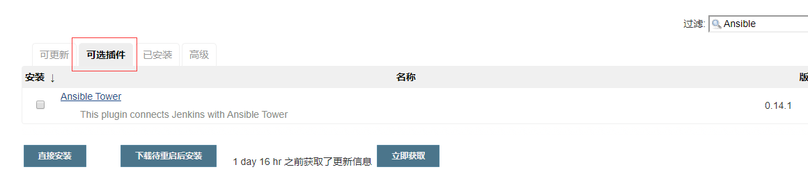
搜索框输入关键字，就会列出包含该关键字的插件，由于我已经安装了ansible的插件，所以这里就不会列出已安装的。
配置全局工具
JDK
回到首页，点击”manage Jenkins -> Global Tool Configuration（全局工具配置）” 菜单，
首先看到Jdk工具配置，在上一节的文章中已经配置好了jdk，在这里直接配置引入即可，如下所示。
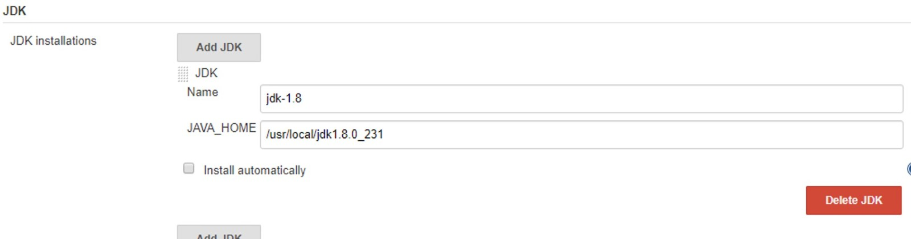
Maven
继续往下浏览，会发现有maven工具的配置，由于还没有安装，这里先配置一下。
到apache官网下载（根据个人需要选择指定的版本下载）。
$ wget https://downloads.apache.org/maven/maven-3/3.6.3/source/apache-maven-3.5.4-src.tar.gz
解压后直接放到指定目录，然后在/etc/profile 添加环境变量配置，比如我的配置如下。
$ tar xf apache-maven-3.5.4-src.tar.gz
$ vi /etc/profile
export M2_HOME=/opt/apache-maven-3.5.4
export PATH=$PATH:$M2_HOME/bin
$ source /etc/profile
验证。
$ mvn -version
Apache Maven 3.5.4 (1edded0938998edf8bf061f1ceb3cfdeccf443fe; 2018-06-18T02:33:14+08:00)
Maven home: /opt/apache-maven-3.5.4
Java version: 1.8.0_231, vendor: Oracle Corporation, runtime: /usr/local/jdk1.8.0_231/jre
Default locale: en_US, platform encoding: UTF-8
OS name: "linux", version: "3.10.0-1062.4.1.el7.x86_64", arch: "amd64", family: "unix"
然后在jenkins中添加maven工具的配置信息。
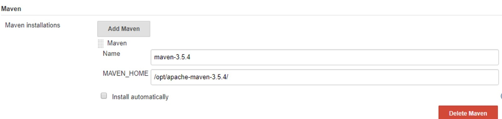
需要注意的是：
maven编译代码时，默认${Maven_HOME}/conf/路径下的settings.xml文件配置了读取存储公共依赖jar包的仓库地址（默认是阿里云的仓库）以及用户名和密码，所以如果有用其它地址的仓库（比如私有nexus），需要修改该配置文件。
关于Jenkins配置maven集成的内容到此就完成了，还是比较简单的。
Email Extension Template 插件
Email Extension Template插件用来在执行job的时候发送email给要通知的用户或者组。
配置Jenkins Location和Extended E-mail Notification，其中系统管理员邮件地址一定要和User Name值一致。如下所示。
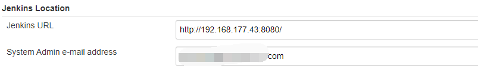-

配置默认的邮件主题以及邮件内容
该插件下的”Default Subject“和”Default Content“参数分别用来设置发送邮件的主题和内容，默认的配置如下所示。
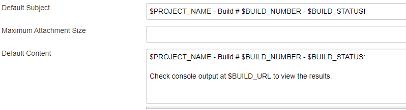
这两个参数的内容均使用了jenkins内置的全局变量，其中$PROJECT_NAME表示项目的名称，$BUILD_NUMBER表示项目构建的ID，$BUILD_STATUS表示项目构建状态。如果想要自定义邮件的主题和内容，直接在这里修改即可。
配置好以后点击”Test configuration“测试一下。- 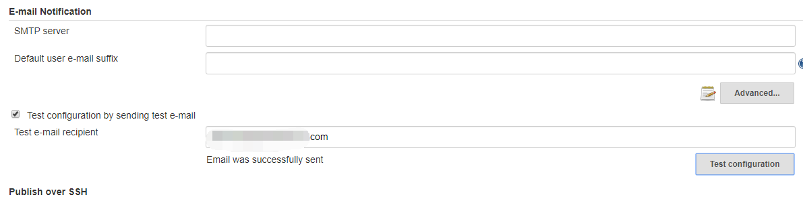
用户权限控制
在使用Jenkins的时候也经常会遇到给不同的用户分配不同的权限的问题，Jenkins的权限管理通过”Role-based Authorization Strategy“插件进行管理。如何安装该插件不在演示，下面看一下如何开启该插件。
点击”Manage Jenkins”–>”Config Global Security“，在”访问控制“选项的”授权策略“中，选择”Role-Based Strategy“保存即可。保存退出后，在”manage Jenkins“中会出现Manager and Assign Roles选项，该选项用于管理并配置用户权限。
”Manage and Assign Roles“选项下有三个菜单，如下所示。
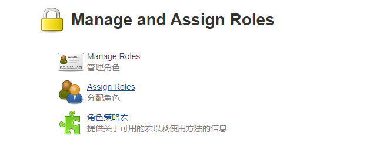
该插件的使用流程大概如下。
通过Mnaage Roles选项创建角色，可以是全局角色也可以是项目角色。如果是项目角色，则可以通过正则语法给相应的项目角色创建匹配规则，使该角色对某些项目有管理权限。
通过Assign Roles选项分配角色，分配角色的主体为Jenkins系统里的用户，可以通过“Manage Users”菜单查看到。
创建角色
点击Manage Roles，点击进去以后，会发现有一个默认的admin角色，该角色为具有管理员权限的用户角色。
创建一个全局角色，一个项目角色，如下所示。
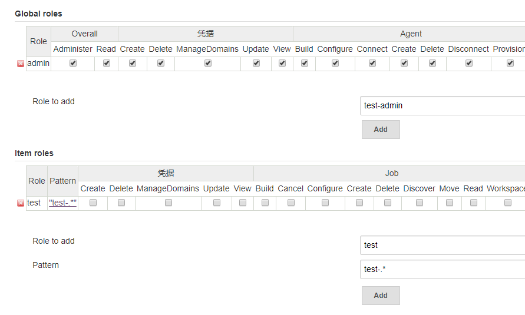
在Role to add输入框中，输入角色名称（自定义），然后在Pattern中输入要管理的项目名称或者要匹配的多个jeknkin项目（job）的正则语法，比如我这里写的是test-.*表示匹配以test-开头的所有项目。添加以后，点击”Pattern“框中匹配项就可以显示该正则匹配到的项目名称了。然后在相应的权限配置栏中勾选该role的权限，比如对于凭据有什么权限，对于job有什么权限等，这里就需要根据自己的实际情况勾选了。
分配角色
创建好角色以后，就可以分配角色了，分配角色给谁呢？这就需要看jenkins里存在的用户了。点击”Manage-Jenkins”–>”Manage Users“，可以看到jenkins系统里所有的用户。然后回到”Manage and Assign Roles“菜单，点击”Assign Roles“，在跳转的界面中就可以看到刚刚创建的角色。同样的，既可以给用户分配全局角色，也可以给用户分配项目角色。
如下图所示。
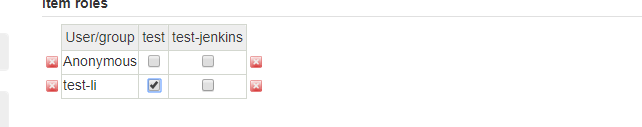
然后就可以使用test-li用户登录了。需要注意的是该用户需要在Jenkins中存在。
此时用“test-li”账户登录发现没有权限，提示如下错误。
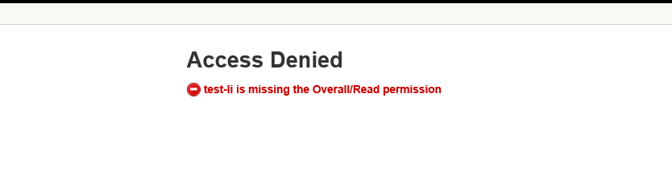
这是因为在创建角色的时候，没有给用户创建一个对Jenkins面板具有查看权限的全局角色，所以此时还需要去“Manage Roles”菜单里添加一个具有全局权限的角色，如下所示：
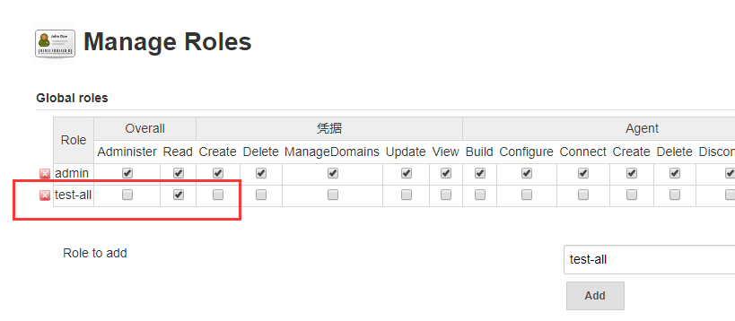
说明：
创建一个名称为test-all的全局角色，该角色的权限为Overall/read，对于Jenkins面板有读取权限。该角色的凭据栏和agent栏都没有勾选，表示对Jenkins系统管理的凭据，node节点等都没有权限。
test-all 角色对Jenkins面板具有读取权限，保存后，再去从新分配权限，如下所示：
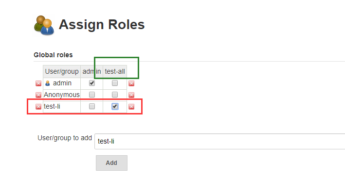
给test-li用户分配一个具有可以读取jenkins面板的权限，这样就可以使用该用户进行正常工作了。如下所示：
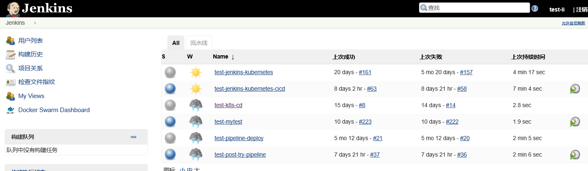
有关用户权限的分配说明就这里，所有的角色创建与权限分配大致就是这样一个流程。
Sonar
配置完公共插件，下面来介绍一下常用的持续交付过程中的使用代码质量检测插件：Sonar
介绍
Sonar是一个用于代码质量管理的开源平台，可以从多个维度管理和检测源代码的质量。通过插件形式，可以支持包括java,C#,C/C++,PL/SQL,Cobol,JavaScrip,Groovy等二十几种编程语言的代码质量管理与检测。sonar也是当下众多公司使用的一款代码质量分析工具。
sonar从如下几个维度检测代码质量：
sonar通过PMD，CheckStyle，Findbugs等代码规则检测工具规范代码编写；
sonar也可以通过PMD，CheckStyle，Findbugs等代码规则检测工具检测出潜在的缺陷；
糟糕的复杂度分布文件、类、方法等，如果复杂度过高将难以改变，这会使得开发人员难以理解它们，且没有自动化的单元测试，对于程序中的任何组件的改变都将可能导致需要全面的回归测试；
sonar可以展示源码中重复严重的地方；
注释不足或者过多没有注释将使代码可读性变差，特别是当不可避免出现人员变动时，程序的可读性大幅度下降，而过多的注释又会使得开发人员将精力过多的花费在阅读注释上，亦违背初衷；- sonar可以很方便地统计并展示单元测试覆盖率；- 通过sonar可以找出循环，展示包与包、类与类之间相互依赖关系，可以检测自定义的架构规则， 可以管理第三方的jar包，可以利用LCOM4检测单个任务规则的应用情况，检测耦合。
sonar执行流程
开发人员将他们的代码提交到代码管理平台中（SVN，GIT等）。
持续集成工具自动触发构建，调用SonarScanner对项目代码进行扫描分析。
分析报告发送到SonarQube Server中进行加工。
SonarQube Server 加工并且保存分析报告到SonarQube Database中，通过UI显示分析报告。
sonar环境需求
SonarQube服务实例需要至少2GB的RAM才能有效运行，并且1GB的可用RAM用于操作系统。需要的磁盘空间量取决于所使用SonarQube分析的代码量。SonarQube必须安装在具有良好读写性能的硬盘上。sonar 的data文件夹包含Elasticsearch索引，当服务器启动并运行时，将在其上完成大量I/O操作. 因此，良好的读写硬盘性能将对整个SonarQube服务性能产生很大影响。
安装
sonar安装的方式也比较多，当然最简便的就是使用docker了，所以本次安装使用docker方式，下面看详细过程。
安装sonar需要安装数据库，这里使用mysql5.7。
下载mysql:5.7镜像。
docker pull mysql:5.7
启动容器
$ docker run --name mysql5.7 -v /data/mysql5.7-data:/var/lib/mysql -p 3306:3306 -e MYSQL_ROOT_PASSWORD=123456 -d mysql:5.7
说明：
/data/mysql5.7-data为挂载的宿主机目录
进入容器中创建数据库与用户。
$ docker exec -it mysql5.7 bash
root@60253d27a5f5:/# mysql -uroot -p123456
......
mysql>
# 创建数据库db_sonar
mysql> create database db_sonar character set utf8 collate utf8_general_ci;
Query OK, 1 row affected (0.00 sec)
mysql> flush privileges;
Query OK, 0 rows affected (0.00 sec)
#创建数据库用户，用户名密码都为sonar
mysql> grant all privileges on db_sonar.* to 'sonar'@'%'identified by 'sonar' with grant option;
Query OK, 0 rows affected, 1 warning (0.00 sec)
mysql> flush privileges;
Query OK, 0 rows affected (0.00 sec)
......
有关sonar使用mysql数据库的配置就完成了。
启动sonar容器
下载 sonarqube:6.7.5 镜像。
docker pull sonarqube:6.7.5
启动sonarqube容器。
$ docker run -d --name sonar --link mysql5.7 -p 9000:9000 -p 9092:9092 -v /data/sonar/conf:/opt/sonarqube/conf -v /data/sonar/data:/opt/sonarqube/data -v /data/sonar/logs:/opt/sonarqube/logs -v /data/sonar/extensions:/opt/sonarqube/extensions -e "SONARQUBE_JDBC_USERNAME=sonar" -e "SONARQUBE_JDBC_PASSWORD=sonar" -e "SONARQUBE_JDBC_URL=jdbc:mysql://mysql5.7:3306/db_sonar?useUnicode=true&characterEncoding=utf8&rewriteBatchedStatements=true&useConfigs=maxPerformance&useSSL=false" sonarqube:6.7.5
说明：
--link表示sonar容器要连接到名称为mysql5.7容器，在配置数据库连接的时候，数据库地址可以直接写容器的名称-v挂载相关配置到/data/sonar/目录下-e指定sonar启动时连接数据库的相关参数配置
待容器全部启动成功后查看
$ docker ps
CONTAINER ID IMAGE COMMAND CREATED STATUS PORTS NAMES
120cb90c2248 sonarqube:6.7.5 "./bin/run.sh" 5 weeks ago Up 2 seconds 0.0.0.0:9000->9000/tcp, 0.0.0.0:9092->9092/tcp sonar
60253d27a5f5 mysql:5.7 "docker-entrypoint..." 5 weeks ago Up 8 minutes 0.0.0.0:3306->3306/tcp, 33060/tcp mysql5.7
根据 http://ip:9000 访问web界面
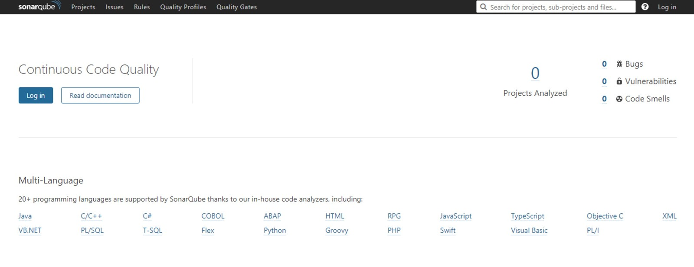
到此，sonar安装完成。
配置
打开web界面，点击login in
默认账号密码都是admin，首次登录后，会有一个使用教程，根据提示，创建token。
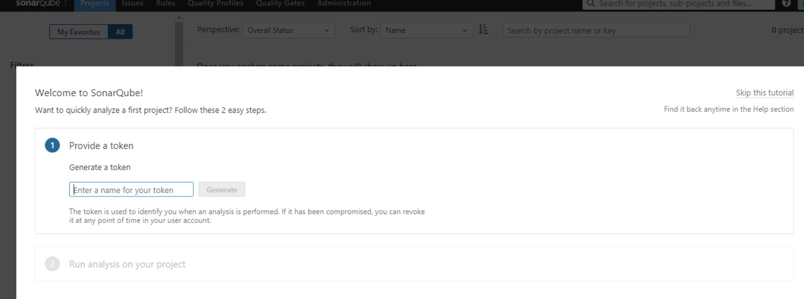
随便输入一个，比如我输入的admin，language为java，build technolog为maven，如下所示。
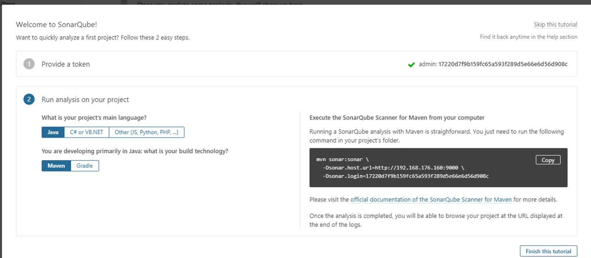
点击finish即可。
点击finish以后跳转到首页，就会看到一个英文版的主页了，如果不习惯，也可以汉化。
汉化
点击顶层菜单”Administration”–”marketplace“，在下面箭头处搜索“chinese”，出现如下插件，点击“install”
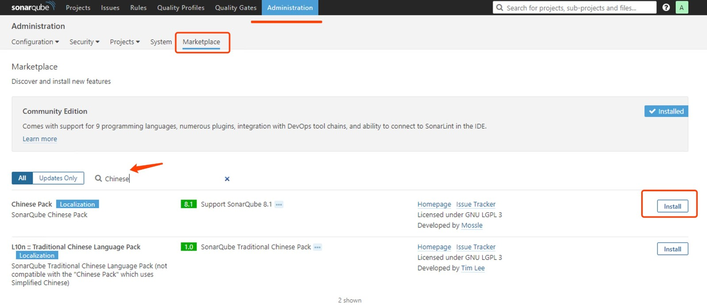
稍等一会，如果安装不成功，报如下错误：
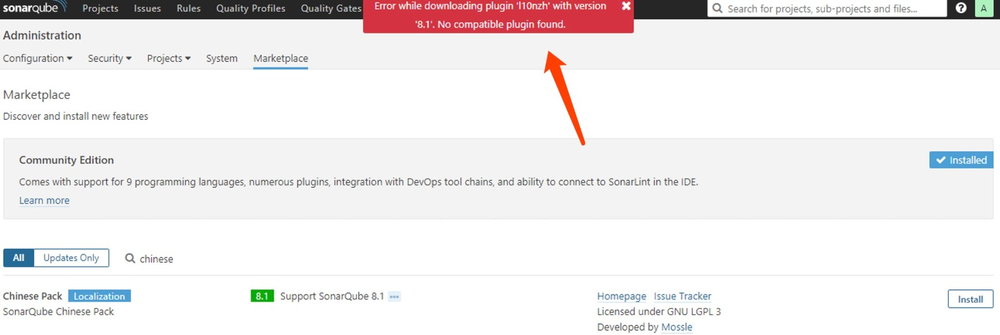
可能的原因是插件版本与sonar版本不兼容，可以去sonar官方github下载合适的汉化插件，比如我的版本是6.7.5，在github上发现sonar-l10n-zh-plugin-1.19该版本支持，下载放到宿主机/data/sonar/extensions/plugins 目录后，重启sonar容器即可。
$ pwd
/data/sonar/extensions/plugins
$ wget https://github.com/SonarQubeCommunity/sonar-l10n-zh/releases/download/sonar-l10n-zh-plugin-1.19/sonar-l10n-zh-plugin-1.19.jar
$ docker restart sonar
说明：
- 在部署sonar时挂载了宿主机目录，所以将插件放到宿主机目录即可。
启动完成后，从新打开页面，到应用市场发现新安装的插件。- 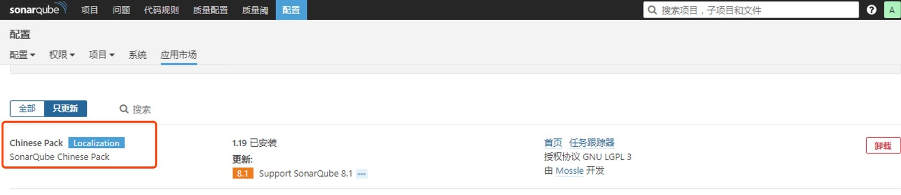
到此，sonar的配置基本就告一段落，接下来找一段代码测试一下sonar是否好用。
测试
这里以扫描maven项目为例，进入到项目工程根目录下，执行扫描命令为：
$ mvn sonar:sonar -Dsonar.host.url=http://sonar_ip:9000 -Dsonar.login=7e73499a981bf49e2f724d11479623a00cf97f1a
说明：
- sonar.login指定的值为刚登陆时生成的token
token如果忘了怎么办，从新生成一个即可，如下所示，先回收，在重新生成
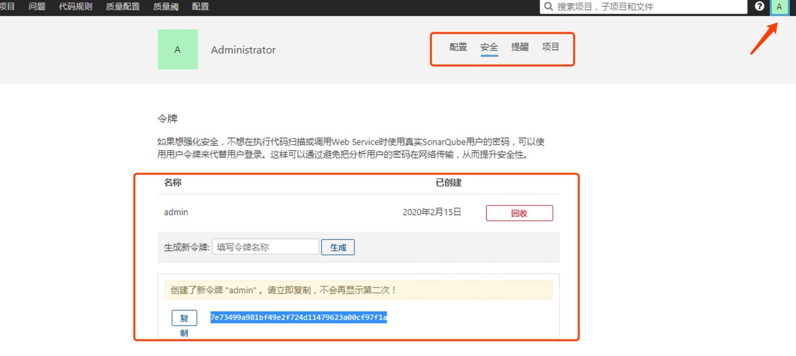
执行成功后，部分日志如下
66230 [INFO] Analysis report generated in 305ms, dir size=790 KB
66816 [INFO] Analysis reports compressed in 584ms, zip size=408 KB
67682 [INFO] Analysis report uploaded in 865ms
67686 [INFO] ANALYSIS SUCCESSFUL, you can browse http://192.168.176.160:9000/dashboard/index/com.hivescm:fw-base-nop
67687 [INFO] Note that you will be able to access the updated dashboard once the server has processed the submitted analysis report
67687 [INFO] More about the report processing at http://192.168.176.160:9000/api/ce/task?id=AXBJZsjiw7C6SYqgng-6
67816 [INFO] Task total time: 44.679 s
68175 [INFO] ------------------------------------------------------------------------
68176 [INFO] BUILD SUCCESS
界面如下。
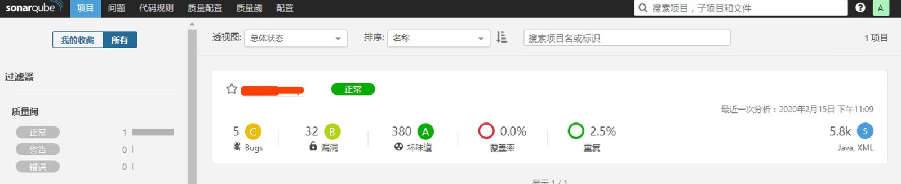
到此步骤，sonar基本可以用了。最基本的扫描完成了，还需要对代码进行分析，这就需要其他插件进行了，用的比较多的当然是SonarQube Scanner 了，下面进行安装配置。
SonarQube Scanner 代码分析
去官网下载所需要的安装包，解压放到指定的目录即可（需要说明的是，建议将scanner放到与Jenkins同主机，因为需要在jenkins中配置即成scanner），然后添加环境变量，比如我的如下：
$ cat /etc/profile
PATH=$PATH:/opt/sonar-scanner-4.2.0/bin
export PATH
$ source /etc/profile
然后修改全局配置
$ cat sonar-scanner-4.2.0/conf/sonar-scanner.properties
#Configure here general information about the environment, such as SonarQube server connection details for example
#No information about specific project should appear here
#----- Default SonarQube server
sonar.host.url=http://192.168.176.160:9000
#----- Default source code encoding
#sonar.sourceEncoding=UTF-8
环境变量生效后，检查配置是否成功
$ sonar-scanner -h
INFO:
INFO: usage: sonar-scanner [options]
INFO:
INFO: Options:
INFO: -D,--define <arg> Define property
INFO: -h,--help Display help information
INFO: -v,--version Display version information
INFO: -X,--debug Produce execution debug output
配置成功后，找一个项目测试一下。
测试
测试方式有两种，一种是直接在命令行加参数执行，一种是使用在项目目录创建配置文件的方式执行，本次测试使用第二种
在项目根目录下，创建配置文件sonar-project.properties（部分参数未列出）
$ cat sonar-project.properties
# must be unique in a given SonarQube instance
sonar.projectKey=fw-base-nop
# this is the name and version displayed in the SonarQube UI. Was mandatory prior to SonarQube 6.1.
sonar.projectName=fw-base-nop
sonar.projectVersion=1.0
# Path is relative to the sonar-project.properties file. Replace "\" by "/" on Windows.
# This property is optional if sonar.modules is set.
sonar.sources=.
sonar.java.binaries=./target/classes
# Encoding of the source code. Default is default system encoding
sonar.sourceEncoding=UTF-8
说明：
- sonar.projectKey ：项目名称，每个项目里必须是唯一的
- sonar.projectName：项目名称，在sonarqube web界面会显示此名称
- sonar.projectVersion：项目版本
- sonar.sources ：需要扫描的项目目录位置
- sonar.host.url ：sonar服务访问的url地址，此处未指定，配置文件中已经指定
- sonar.login ：令牌名称对应的token，此处也没有指定
- sonar.java.binaries ：项目编译目录，java为例，则为class文件所在的目录
- sonar.sourceEncoding：指定的字符集
更多与参数有关的内容可参考这里
执行成功后部分结果如下所示
......
WARN: This may lead to missing/broken features in SonarQube
INFO: 37 files had no CPD blocks
INFO: Calculating CPD for 80 files
INFO: CPD calculation finished
INFO: Analysis report generated in 702ms, dir size=541 KB
INFO: Analysis reports compressed in 447ms, zip size=259 KB
INFO: Analysis report uploaded in 480ms
INFO: ANALYSIS SUCCESSFUL, you can browse http://192.168.176.160:9000/dashboard/index/fw-base-nop
INFO: Note that you will be able to access the updated dashboard once the server has processed the submitted analysis report
INFO: More about the report processing at http://192.168.176.160:9000/api/ce/task?id=AXBMjjIlw7C6SYqgng_B
INFO: Task total time: 14.546 s
INFO: ------------------------------------------------------------------------
INFO: EXECUTION SUCCESS
INFO: ------------------------------------------------------------------------
INFO: Total time: 17.906s
INFO: Final Memory: 14M/60M
然后会在sonar web界面出现一个新的项目，如下- 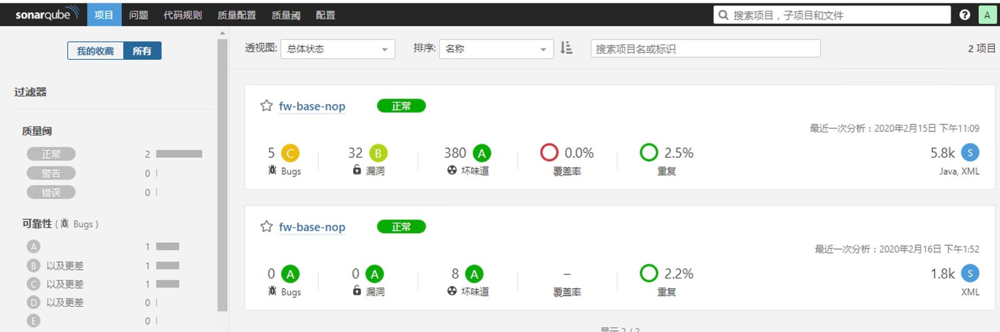
到此，关于sonar的基本配置已经完成，但是本次虽然测试成功了，但所有的操作还都是在shell bash中，所以接下来要配置与Jenkins的集成。
jenkins集成sonar-scanner配置
Jenkins与sonar和scanner集成的插件在文章的开头已经安装，这里直接演示如何配置。
点击菜单”manage jenkins（管理jenkins）--> configure system (系统配置)“，找到”SonarQube servers“配置参数，配置与sonarqube的连接，如下所示
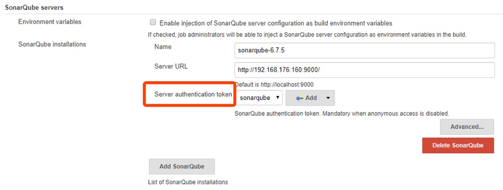
其中红色框内为jenkins连接登陆sonarqube的token凭据ID，共有两种方法创建该凭据，第一种，在此处点击”Add“，选中jenkins，在弹出的框中：
- Kind参数处选择
Secret text - Secret参数处填写前面在安装sonarqube时创建的token
- ID和Describption为自定义该凭据的名字，其中ID必须为唯一，因为jenkins在调用的时候是根据ID调用该凭据的
- 其它参数默认
如下所示，添加完后点击Add即可添加，然后在上图红色框处的下拉框中选择此凭据即可。
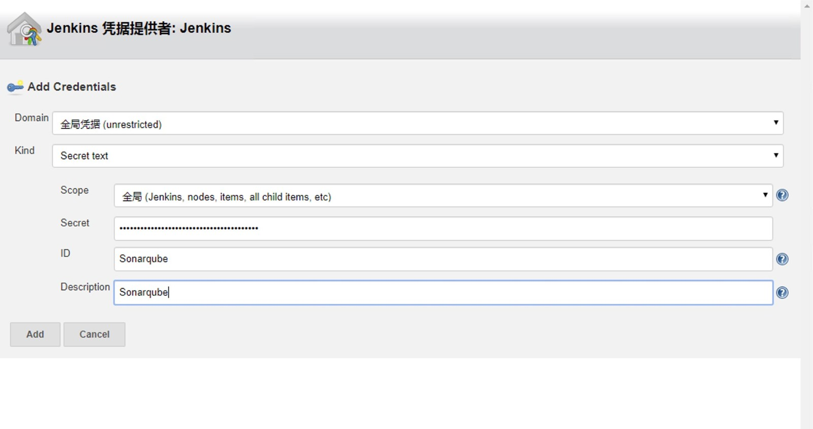
第二种，在jenkins首页，点击”凭据-->系统-->全局凭据-->Add Credentials“，如下所示：
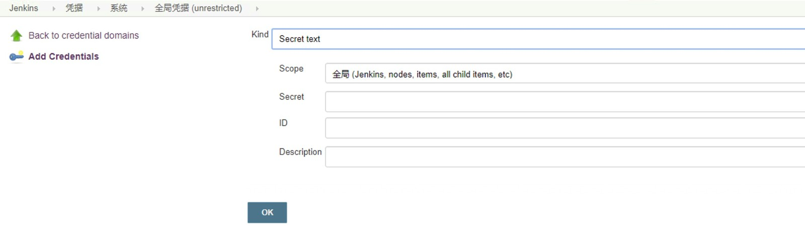
添加配置与上面一样
jenkins添加sonarqube配置完成，下面配置jenkins集成sonnarqube-scanner。
jenkins首页，点击”manage jenkins（管理jenkins）--> Global Tool Configuration(全局工具配置)“，找到SonarQube Scanner参数值，添加scanner在本地的路径，并给定一个名称，如下所示
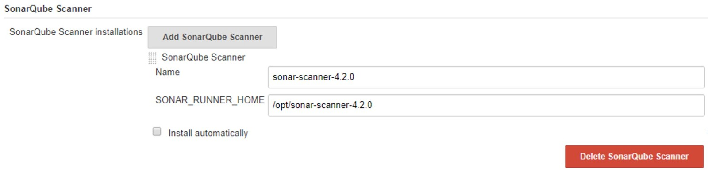
到此即完成jenkins与scanner的集成配置。然后我们创建一个Jenkins项目测试一下
创建一个maven项目，配置好maven打包配置后，在”Post Steps“步骤点击”Execute SonarQube Scanner“，配置如下
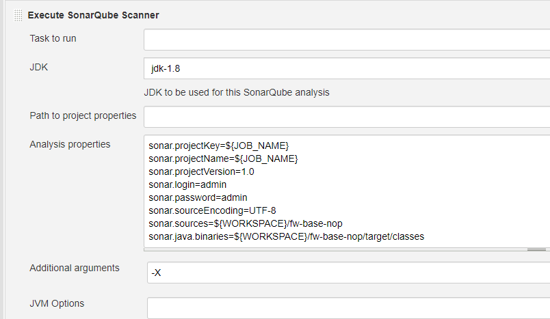
配置参数不用多说，上面有过介绍，只不过这里的部分参数值使用了变量的方式，有关变量的详细说明可参考${jenkins_url}/pipeline-syntax/globals。Additional arguments指定了-X参数用于在执行scanner时打印详细的日志信息。
执行结果如下所示
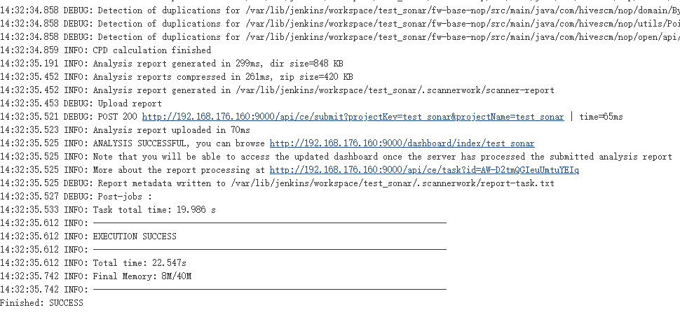
有关jenkins与sonar集成的配置使用就先简单的介绍到这里，在以后的章节中会继续介绍如何在pipeline中使用sonar-scanner
© 2019 - 2023 Liangliang Lee. Powered by gin and hexo-theme-book.